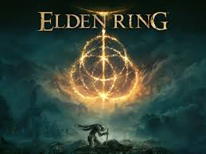

Elden Ring
Álzate, Sinluz, y que la gracia te guíe para abrazar el poder del Círculo de Elden y encumbrarte como señor del Círculo en las Tierras Intermedias. En las Tierras Intermedias gobernadas por la Reina Márika, la Eterna, el Círculo de Elden, origen del Árbol Áureo, ha sido destruido. Los descendientes de Márika, todos semidioses, reclamaron los fragmentos del Círculo de Elden conocidos como Grandes Runas. Fue entonces cuando la demencial corrupción de su renovada fuerza provocó una guerra: la Devastación. Una guerra que supuso el abandono de la Voluntad Mayor. Y ahora, la gracia que nos guía recaerá sobre el Sinluz desdeñado por la gracia del oro y exiliado de las Tierras Intermedias. Tú que has muerto, pero vives, con tu gracia tiempo ha perdida, recorre la senda hacia las Tierras Intermedias más allá del neblinoso mar para postrarte ante el Círculo de Elden. Y conviértete en el señor del Círculo.
Sitio oficial